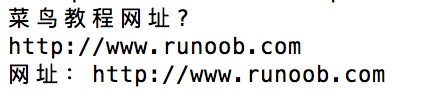

Operaciones de archivos en Perl
Perl utiliza un tipo de variable llamado identificador de archivo (file handle) para manipular archivos.
Para leer o escribir datos de un archivo se necesita un identificador de archivo.
Identificador de archivo (file handle)es unI/Onombre de la conexión.
Perl proporciona tres identificadores de archivo:STDIN，STDOUT，STDERRque representan respectivamenteentrada estándar、salida estándar和salida de error estándar。
En Perl, la apertura de archivos se puede realizar de la siguiente manera:
open FILEHANDLE, EXPR open FILEHANDLE sysopen FILEHANDLE, FILENAME, MODE, PERMS sysopen FILEHANDLE, FILENAME, MODE
Descripción de parámetros:
- FILEHANDLE: identificador de archivo, se utiliza para almacenar un identificador único del archivo.
- EXPR: expresión formada por el nombre del archivo y el tipo de acceso al archivo.
- MODE: tipo de acceso al archivo.
- PERMS: bits de permisos (permission bits).
Función open
El siguiente código usa la función open en modo de solo lectura<para abrir el archivo file.txt:
open(DATA, "<file.txt");
<Indica modo de solo lectura.
En el código, DATA es el identificador de archivo que se usa para leer el archivo. El siguiente ejemplo abrirá el archivo y mostrará su contenido:
Ejemplo
El siguiente código, en modo escritura,>abre el archivo file.txt:
open(DATA, ">file.txt") or die "file.txt 文件无法打开, $!";
>Indica modo de escritura.
Si necesitas abrir el archivo en modo lectura/escritura, puedes agregar el signo + delante del carácter > o <:
open(DATA, "+<file.txt"); or die "file.txt 文件无法打开, $!";
Esta forma no elimina el contenido original del archivo. Si quieres eliminarlo, el formato es el siguiente:
open DATA, "+>file.txt" or die "file.txt 文件无法打开, $!";
Si deseas agregar datos al archivo, solo necesitas abrir el archivo en modo de adición (append) antes de añadir los datos:
open(DATA,">>file.txt") || die "file.txt 文件无法打开, $!";
>>Indica agregar datos al final del archivo existente. Si necesitas leer el contenido del archivo al que se va a agregar, puedes añadir el signo +:
open(DATA,"+>>file.txt") || die "file.txt 文件无法打开, $!";
La siguiente tabla enumera los diferentes modos de acceso:
| Modo | Descripción |
|---|---|
| < o r | Abre en modo de solo lectura y coloca el puntero del archivo al inicio. |
| > o w | Abre en modo escritura, coloca el puntero del archivo al inicio y trunca el tamaño del archivo a cero. Si el archivo no existe, intenta crearlo. |
| >> o a | Abre en modo escritura y coloca el puntero del archivo al final. Si el archivo no existe, intenta crearlo. |
| +< o r+ | Abre en modo lectura/escritura y coloca el puntero del archivo al inicio. |
| +> o w+ | Abre en modo lectura/escritura, coloca el puntero del archivo al inicio y trunca el tamaño del archivo a cero. Si el archivo no existe, intenta crearlo. |
| +>> o a+ | Abre en modo lectura/escritura y coloca el puntero del archivo al final. Si el archivo no existe, intenta crearlo. |
Función Sysopen
sysopenLa función es similar a la función open, excepto que la forma de sus parámetros es diferente.
El siguiente ejemplo abre el archivo en modo lectura/escritura (+<filename):
sysopen(DATA, "file.txt", O_RDWR);
Si necesitas vaciar el archivo antes de actualizarlo, la sintaxis es la siguiente:
sysopen(DATA, "file.txt", O_RDWR|O_TRUNC );
Puedes usar O_CREAT para crear un archivo nuevo, O_WRONLY es el modo de solo escritura y O_RDONLY es el modo de solo lectura.
The PERMSEl parámetro es un valor de atributo octal, que representa los permisos después de la creación del archivo; el valor predeterminado es0x666。
La siguiente tabla enumera los posibles valores de modo:
| Modo | Descripción |
|---|---|
| O_RDWR | Abre en modo lectura/escritura y coloca el puntero del archivo al inicio. |
| O_RDONLY | Abre en modo de solo lectura y coloca el puntero del archivo al inicio. |
| O_WRONLY | Abre en modo escritura, coloca el puntero del archivo al inicio y trunca el tamaño del archivo a cero. Si el archivo no existe, intenta crearlo. |
| O_CREAT | Crear archivo |
| O_APPEND | Añadir al archivo |
| O_TRUNC | Truncar el tamaño del archivo a cero |
| O_EXCL | Si el archivo existe cuando se usa O_CREAT, se devuelve un mensaje de error; esto se puede usar para comprobar si el archivo existe. |
| O_NONBLOCK | La E/S no bloqueante (non-blocking I/O) hace que nuestra operación tenga éxito o devuelva inmediatamente un error, sin quedar bloqueada. |
Función Close
Después de usar el archivo, hay que cerrarlo para vaciar el búfer de entrada/salida asociado al identificador de archivo. La sintaxis para cerrar el archivo es la siguiente:
close FILEHANDLE close
FILEHANDLE es el identificador de archivo especificado. Si se cierra correctamente, devuelve true.
close(DATA) || die "无法关闭文件";
Leer y escribir archivos
Hay varias formas diferentes de leer y escribir información en un archivo:
Operador <FILEHANDL>
El método principal para leer información de un identificador de archivo abierto es el operador <FILEHANDLE>. En contexto escalar, devuelve una sola línea del identificador de archivo. Por ejemplo:
Ejemplo
Después de ejecutar el programa anterior, se muestra la siguiente información. Cuando introducimos la URL, la sentencia print la mostrará:

Cuando usamos el operador <FILEHANDLE>, este devuelve una lista de cada línea del identificador de archivo; por ejemplo, podemos importar todas las líneas a un array.
Primero crea el archivo import.txt, con el siguiente contenido:
$ cat import.txt 1 2 3
Lee import.txt y coloca cada línea en el array @lines:
Ejemplo
Al ejecutar el programa anterior, el resultado es:
1 2 3
Función getc
La función xgetc devuelve un solo carácter del FILEHANDLE especificado, o de STDIN si no se especifica:
getc FILEHANDLE getc
Si ocurre un error, o si el identificador de archivo está al final del archivo, devuelve undef.
Función read
La función read se utiliza para leer información desde un identificador de archivo con búfer.
Esta función se utiliza para leer datos binarios de un archivo.
read FILEHANDLE, SCALAR, LENGTH, OFFSET read FILEHANDLE, SCALAR, LENGTH
Descripción de parámetros:
- FILEHANDLE: identificador de archivo, se utiliza para almacenar un identificador único del archivo.
- SCALAR: almacena el resultado. Si no se especifica OFFSET, los datos se colocan al inicio de SCALAR. De lo contrario, los datos se colocan después del byte OFFSET en SCALAR.
- LENGTH: longitud del contenido a leer.
- OFFSET: desplazamiento.
Si la lectura tiene éxito, devuelve el número de bytes leídos; si se llega al final del archivo, devuelve 0; si ocurre un error, devuelve undef.
Función print
Para todas las funciones que leen información de un identificador de archivo, la principal función de escritura en el backend es print:
print FILEHANDLE LIST print LIST print
Con el identificador de archivo y la función print se pueden enviar los resultados de la ejecución del programa al dispositivo de salida (STDOUT: salida estándar), por ejemplo:
print "Hello World!\n";
Copia de archivos
En el siguiente ejemplo abriremos un archivo existente file1.txt, leeremos cada una de sus líneas y las escribiremos en el archivo file2.txt:
Ejemplo
Renombrar archivos
En el siguiente ejemplo, renombraremos el archivo existente file1.txt a file2.txt; el directorio especificado es /usr/runoob/test/:
#!/usr/bin/perl
rename ("/usr/runoob/test/file1.txt", "/usr/runoob/test/file2.txt" );
FunciónrenamesSolo acepta dos parámetros y solo renombra archivos que ya existen.
Eliminar archivos
En el siguiente ejemplo demostramos cómo usarunlinkla función para eliminar archivos:
Ejemplo
Especificar la posición del archivo
Puedes usartellla función para obtener la posición del archivo, y mediante el uso deseekla función para especificar la posición dentro del archivo:
Función tell
La función tell se utiliza para obtener la posición del archivo:
tell FILEHANDLE tell
Si se especifica FILEHANDLE, la función devuelve la posición del puntero del archivo, en bytes. Si no se especifica, devuelve el identificador de archivo seleccionado por defecto.
Función seek
La función seek() mueve el puntero de lectura/escritura del archivo a través del identificador de archivo para leer o escribir, realizando la lectura y escritura en bytes:
seek FILEHANDLE, POSITION, WHENCE
Descripción de parámetros:
- FILEHANDLE: Manejador de archivo, utilizado para almacenar un identificador único de archivo.
- POSITION: Indica el número de bytes que debe moverse el manejador de archivo (puntero de posición de lectura/escritura).
- WHENCE: Indica la posición inicial desde la cual el manejador de archivo (puntero de posición de lectura/escritura) comienza a moverse. Puede tomar los valores 0, 1, 2; que representan el inicio del archivo, la posición actual y el final del archivo, respectivamente.
El siguiente ejemplo lee 256 bytes desde el inicio del archivo:
seek DATA, 256, 0;
Información del archivo
Las operaciones de archivos en Perl también pueden probar primero si el archivo existe, si se puede leer o escribir, etc.
Podemos crear primero el archivo file1.txt, con el siguiente contenido:
$ cat file1.txt www.runoob.com
Ejemplo
Al ejecutar el programa anterior, el resultado es:
file1.txt 信息：是一个文本文件, 15 字节
Los operadores de prueba de archivos se muestran en la siguiente tabla:
| Operador | Descripción |
|---|---|
| -A | Tiempo del último acceso al archivo (en días) |
| -B | Si es un archivo binario |
| -C | Tiempo de modificación del nodo índice (inode) del archivo (en días) |
| -M | Tiempo de la última modificación del archivo (en días) |
| -O | El archivo es propiedad del UID real |
| -R | El archivo o directorio puede ser leído por el UID/GID real |
| -S | Es un socket |
| -T | Si es un archivo de texto |
| -W | El archivo o directorio puede ser escrito por el UID/GID real |
| -X | El archivo o directorio puede ser ejecutado por el UID/GID real |
| -b | Es un archivo block-special (especial de bloque) (como un disco montado) |
| -c | Es un archivo character-special (especial de caracteres) (como dispositivos de E/S) |
| -d | Es un directorio |
| -e | El nombre del archivo o directorio existe |
| -f | Es un archivo regular |
| -g | El archivo o directorio tiene el atributo setgid |
| -k | El archivo o directorio tiene el bit sticky establecido |
| -l | Es un enlace simbólico |
| -o | El archivo es propiedad del UID efectivo |
| -p | El archivo es una tubería con nombre (FIFO) |
| -r | El archivo puede ser leído por el UID/GID efectivo |
| -s | El archivo o directorio existe y su tamaño es distinto de cero (devuelve el número de bytes) |
| -t | El manejador de archivo es TTY (resultado de la función del sistema isatty(); esta prueba no se puede utilizar con nombres de archivo) |
| -u | El archivo o directorio tiene el atributo setuid |
| -w | El archivo puede ser escrito por el UID/GID efectivo |
| -x | El archivo puede ser ejecutado por el UID/GID efectivo |
| -z | El archivo existe y tiene un tamaño de 0 (para directorios siempre es false), es decir, si es un archivo vacío. |
Haz clic para compartir notas
<p style="font-size:14px;">¡La nota debe ser una extensión del contenido de este artículo!</p><br> <p style="font-size:12px;"><a href="../tougao.html" target="_blank">Para enviar un artículo, haz clic aquí</a></p> <p style="font-size:14px;"><a href="../w3cnote/runoob-user-test-intro.html" target="_blank">Cómo obtener el código de invitación de registro</a></p> <h3 class="text-muted"><i class="fa fa-info-circle" aria-hidden="true"></i> ¡Antes de compartir notas, debes <a href=";.html" class="runoob-pop">iniciar sesión</a>!</h3> <p><a href="../w3cnote/runoob-user-test-intro.html" target="_blank">Cómo obtener el código de invitación de registro</a></p>